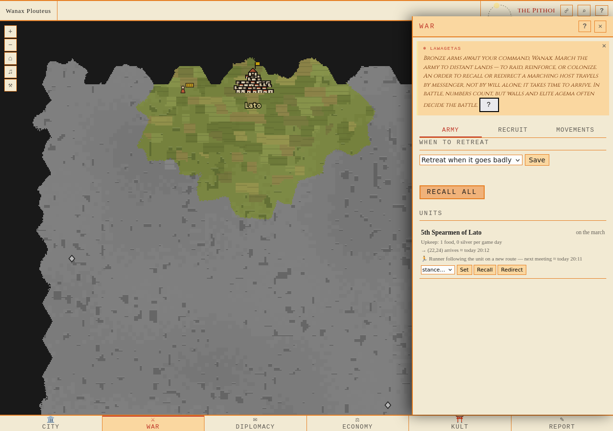
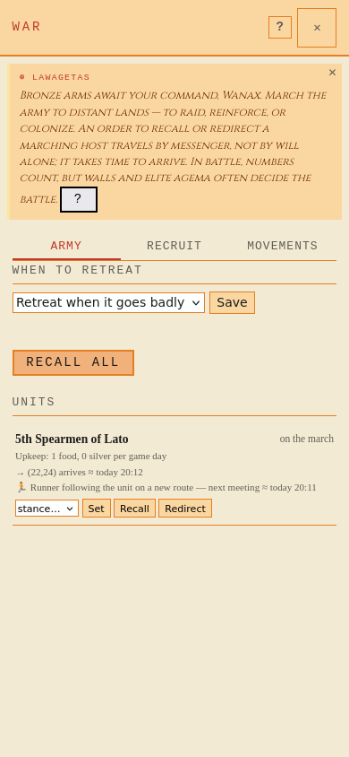

Riktig separat värld, CLI-marsch och senare CLI-hållningsorder. Samma Runner följer efter förbandet med ny fysisk rutt. Inga testorder i den levande världen.
Rapport · Täckning/mutanter · API/DB/worker-bevis

